Lets go! You finally made it out of the ISM chapter! Not so bad, right? Now that you have a foundational understanding of the gaseous precursors of all stars and structures in the universe, we can now proceed to discuss how exactly do stars form. For the next 3 chapters, we will be investigating the life of a low mass star like our Sun. As we briefly mentioned in Chapter One, the mass of a star determines practically everything about its evolution and lifetime, so it is important that we exclusively focus on a low mass star for the next few chapters. We will branch out periodically, though, to account for different evolutionary/formation pathways as a star increases in initial mass.
Gravitational Collapse
Gravitational Collapse is always the first step in the formation of any type of star. To discuss this first step, and the many evolutionary steps ahead of it, let us first set the stage. For this example, imagine we are observing a regular sized molecular cloud, floating at approximately 50 light years in diameter with minimal external and internal gravitational interaction.
Onset Causes
Gravitational Collapse has a few distinct ways by which it can start that you must know very well for competition:
Stellar Winds: Stellar winds, which are the collective forces of hot stars shooting out high speed, charged particles from their surfaces, may function to compress surrounding ISM to start gravitational collapse. As many molecular clouds and HII regions contain newly formed OB stars, Gravitational Collapse via stellar winds is fairly common.
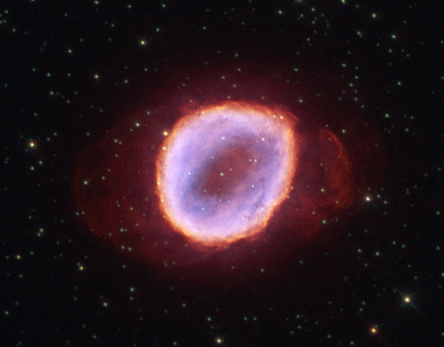
Real life example of stellar winds. In planetary nebula NGC 6565, a cloud of gas was ejected from the star after strong stellar winds. This ejection occurred shortly before the death of the star. This is a composite image shot by the Hubble Space Telescope. Take note of how ISM is compressed and carved into the thick circle shape by the strong force of stellar winds. This compression and reshaping can induce gravitational collapse in the surrounding clouds. Supernovae Shock Waves: The final explosion of a dying star shoots the stars layers in a shock wave traveling close to the speed of light for light years of distance. When a shock wave from a supernova reaches a cloud of ISM, the shock wave wraps around blobs of gas and dust and condenses it.
Galactic Collisions: When two galaxies being to collide, they form a temporary binary system where both galaxies orbit their common center of mass as they slowly merge. This pivotal gravitational interaction sends waves of gravity across both galaxies which compress the interstellar medium it passes through and thus has the potential to begin Gravitational Collapse.
Molecular Cloud Collisions: Similar to the collision of galaxies, the collision of molecular clouds sends gravitational waves (albeit at a much small scale and magnitude) throughout both structures that further compress their gaseous clumps and cores.
Molecular Cloud Turbulence: As discussed in Chapter One, molecular clouds have turbulence that creates the filamentous structures commonplace in their internal structure. This same turbulence has the potential to further compress the gaseous filaments to start gravitational collapse.
Gravitational Shock Waves: Like the shock waves from supernovae and Galactic collisions, shock waves can also come from many other sources and cause gravitational collapse in the same way. A few examples of miscellaneous sources of shock waves you need to know include: the merging of two black holes or two neutron stars; the rapid rotation of a nearby neutron star; the rotation and/or accretion by a supermassive black hole at the center of a galaxy.
Overall, the general rule for starting gravitational collapse is that the balance between the inward force of gravity and outward force of radiation pressure inside the cloud must be tipped, typically by the compression of the cloud by some external force. Once this balance is tipped in favor of Gravity, the molecular cloud/ISM region will undergo Gravitational Collapse. It is important to understand that gravitational collapse will only occur if the Jean’s mass or Jean’s Length is exceeded. For our example molecular cloud, lets assume that a supernovae that occurred 50 light years away compresses our molecular cloud past its Jean’s Length, and thus gravitational collapse starts.
Gravitational Collapse & Fragmentation
Gravitational Collapse is a multi-step process. As our molecular cloud is compressed, the inward gravitational force increases (because there is more mass concentrated in a smaller volume) faster than outward radiation pressure force can balance it and maintain equilibrium. This can be mathematically proved via the Viral theorem, which states that kinetic energy of a closed, orbital system is always half the magnitude of gravitational potential energy. This disbalance causes the gravitational force to continue to push in on the edges of the molecular cloud and accelerate in strength. This compression, intuitively, causes the radius of the molecular cloud to decrease at a increasing speed. Note that, because there has been only been compression of ISM on a large scale (remember, molecular clouds can be up to 600 light years across), this initial compression is considered isothermal.
At a certain point, the molecular cloud is compressed to a certain critical radius where radiation pressure begins to balance the force of gravity. This immediately causes the transition to the second stage of gravitational collapse: Fragmentation. During fragmentation, the larger molecular cloud that underwent compression splits into as little as 2 smaller clouds or as many as hundreds of smaller clouds called Infalling Regions . Each of these smaller clouds then undergo their own gravitational collapse process, compressing their respective ISM into a smaller and smaller radius. As the radius of each of these clumps shrinks under the tremendous force of gravity, their cores begin to exponentially increase in both temperature and density. At the start of fragmentation, the temperature of the cores of our smaller clouds is approximately 100 K, but nearing the end of the stage each core will eventually reach a temperature of 10,000 K.
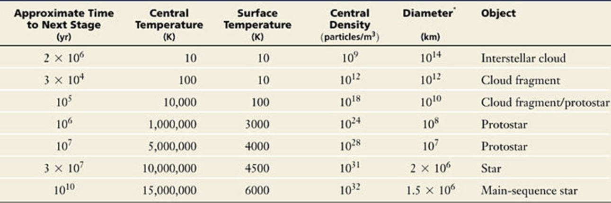
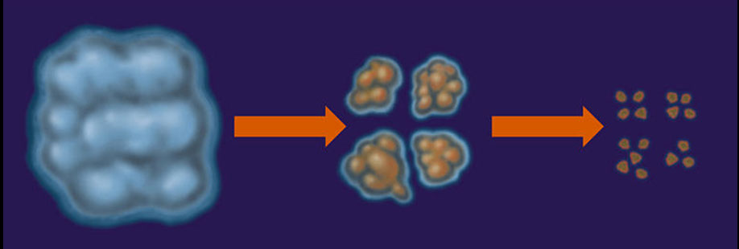
Protostellar cores
Gravitational collapse begins to slow when the radiation pressure in the core reaches a magnitude near-balancing the inward force of gravity. This point is signified by the temperature of the core in the smaller cloud increasing significantly. At this point, we call the smaller cloud a protostellar core. Protostellar cores are still more-less blobs of ISM, only now incredibly compressed to the point of reaching temperatures near to that of real stars. The core temperatures of approximately 10,000 K produce dim illumination which continues to grow in magnitude as the temperature increases further.
Protostars & Hertzsprung-Russell Diagram
To recap, at this point, we now focus in on one collapsing protostellar core in a molecular cloud. The protostellar core has reached high enough temperatures to produce luminosity (albeit, very dimly). The protostellar core’s inner temperature and density are continuing to increase at an increasing rate as it is compressed further and further. Since the start of Gravitational collapse, it has been approximately 1 million years (this slow poke, am I right?). It is also important to note that each protostellar core is similar in mass to the star it will eventually form. Low-mass protostellar cores become low-mass stars, while high-mass protostellar cores can either become a binary star system (i.e. two stars orbiting each other, which is the most common outcome of stellar formation in the milk way) or simply a very massive star.
Approximately 100,000 years after the onset of fragmentation, the core compresses to a point where inner temperatures reach 1,000,000 K. At this point, the core is so compact and dense that the electrons in the core are brought into contact, creating what is known as electron degeneracy pressure which functions as an outward force that finally balances gravity. Electron degeneracy pressure, arises from the quantum principle called Pauli’s Exclusion Principle that no two electrons (or any fermion particle, that is) can occupy the same quantum state at the same time. Thus, when fermions like electrons in a protostellar core are forced into a small volume, they must occupy higher energy states and move faster to avoid breaking the Pauli Exclusion Principle.
It is at this moment, when the gravitational force is balanced, when the core becomes opaque and the outer layers of the protostellar core thin allowing some luminosity to escape from the depths of the core. This hot core is now known as a protostar, and its opaque outer layer is known as the photosphere. The thick and opaque photosphere traps majority of the heat inside of the core, turning the once isothermic collapse into a adiabatic environment, as negligible heat is transferred from the core to the outside molecular cloud.
Protostars are the closest body in the stellar formation process to a star, without being an actual star. The difference between an actual star and a protostar is that protostars are not sufficiently hot in their cores to fuse hydrogen as a fuel to balance the force of gravity. Protostars instead use a combination of different fusion types in order to fight the force of gravity until they become compressed enough to sustain the temperatures to fuse hydrogen. Like stars, protostars now have a more established internal structure and enact an independent gravitational force on the matter around it, causing protostars to slowly accrete mass from its surroundings. We shall now enumerate each of the common types of protostar that you may see on your next Scioly Astro test.
T Tauri Stars
T Tauri stars are the most common type of protostar that you will encounter in Scioly Astro. They are generally characterized by their thick protoplanetary disk (a disk of thick dust and gas orbiting around them), their strong Halpha emission lines, bipolar jets, 0.1 to 2 solar masses in mass (each solar mass representing a factor of the mass of the sun). We will now enumerate the key characteristics of T Tauri stars that you need to know.
General Properties
There are typically two types of T Tauri stars that you need to know the difference between. Classical T Tauri Stars are T Tauri stars with a regular, thick protoplanetary disk orbiting around it. This is different to the second type of T Tauri stars called Weak-line T Tauri Stars which are known to have a very thin, almost non-existent disk, or in some cases no disk at all. As you may expect, the lack of disk of Weak-line T Tauri stars has an affect on the emission lines visible to astronomers. For example, Weak-line T Tauri stars have a significantly less strong Halpha emission line because there is less hydrogen beign excited in the disk of the T Tauri stars (because there is no disk, durrr).
T Tauri stars, among some other protostar types, are also grouped into the classification of pre-main-sequence stars. Pre-main-sequence stars are stellar bodies that are not only unable to fuse hydrogen, but also unable to be seen from earth. The latter is important in distinguishing protostar classification and pre-main-sequence classification because there are stars like brown dwarfs (which we will discuss later in this chapter) that cannot fuse hydrogen but can be seen from earth in visible light and are still considered stars. They are not on the main sequence (the grouping of stars that fuse hydrogen, 90 percent of all stars), and are also not going to be on the main sequence and eventually compress to fuse hydrogen in the future like protostars. Pre-main-sequence is the general classification to distinguish this phenomenon.
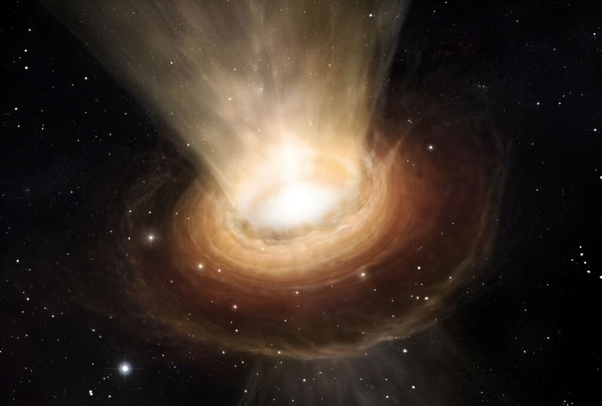
One unique characteristic to note of T Tauri Stars is the strength of their magnetic fields. Due to the rising concentration of ionized particles in the protostar’s spectra (due to the high levels of UV radiation now emitted by the protostar), an intense magnetic field is created, centering itself around the two poles of the T Tauri star (similar to our earth and sun). The magnetic field of T Tauri stars is measured using the Zeeman Effect. The Zeeman effect is the phenomenon where a magnetic field causes the spectral lines (emission and absorption) to be split and scattered when detected from earth. This happens because the magnetic field of T Tauri stars is so strong that it curves and alters the orbital pathway of atomic electrons in the spectra of the star. This degree of the spectral line splitting is use to measure the strength of the magnetic field of T Tauri stars, and this same method is now being used in recent research to measure the magneitc fields of molecular clouds, our sun’s starspots, and other nearby stars.
Protoplantary disk
Arguably the most important quality of a T Tauri star is its protoplanetary disk. You may recall from our premature discussion of T Tauri stars that we established that T Tauri stars undergo a process called accretion. Accretion is the process where a star’s gravitational force pulls nearby mass from its surroundings into its orbit and eventually into its surface to gain mass and energy. The protoplanetary disk of T Tauri stars is center of the accretion process of T Tauri stars. The protostar pulls mass from the molecular cloud surrounding it into its protoplanetary disk, from which it then pulls mass eventually onto its surface. This procedure is governed by the magnetic field of T Tauri stars, giving the process by which gas and dust matter is pulled from the protoplanetary disk onto the surface of the star the name magnetospheric accretion.
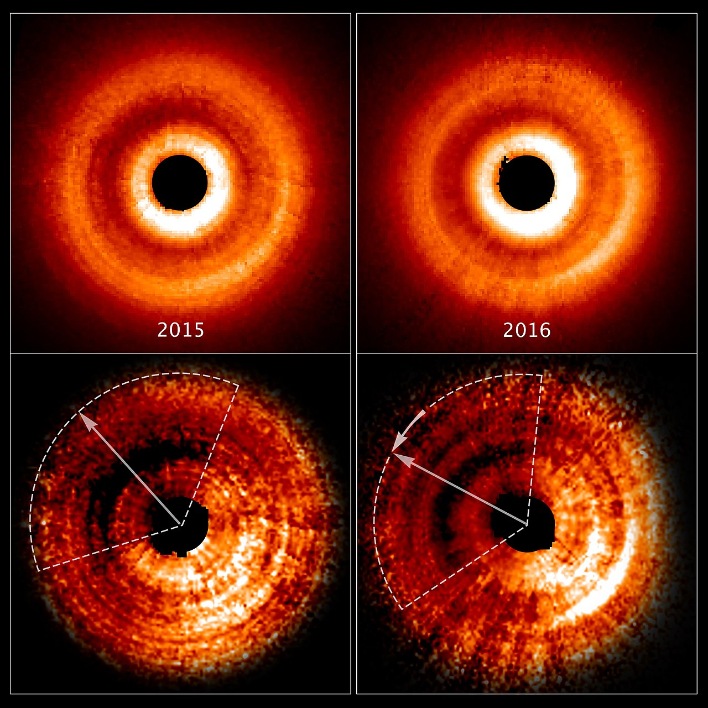
Spectral Lines & Radiation
T Tauri stars are characterized by emission lines in singly ionized Calcium (Ca II), neutral oxygen (O I), F through G star type, Hydrogen (Halpha and Ly-a), and singly ionized Sulfur (S II). This is not to confused with singly ionized lithium (Li II) or helium (He II), although we will see in the next section that T Tauri stars are capable of fusing lithium. The Ca II emission lines indicates that the star is in the pres-main-sequence phase with active stellar winds and accretion, because the Calcium is first formed in the cold molecular cloud, pulled by gravity into the protoplanetary disk, accreted onto the surface, and launched from the protostar in winds. In contrast to the emission lines of T Tauri stars, the absorption lines of T Tauri stars do contain lithium. This spectral lithium is a major difference between main-sequence stars and T Tauri stars.
T Tauri stars strongly radiate excess infrared and UV radiation. The sheer strength of the UV radiation of T Tauri stars is exemplified in a phenomenon known as accretion shocks. During accretion, as discussed before, the magnetic field directs material to the surface of the protostar, causing the accretion of mass. When the mass nears the surface of the protostar, the UV radiation overcomes the magnetic field to produce a shockwave as the material hits the surface of the protostar, launching part of it up to the poles of the protostar, where it is ejected at high speeds. To scale, the UV radiation of T Tauri stars is 50 times stronger than that of main sequence stars. The lyman-alpha series spectral lines (ly-a) account for 80 percent of the UV radiation emitted by T Tauri stars. The lyman-alpha series line emission and its relationship with UV radiation is caused by the UV radiation penetrating deep into the disk by resonance scattering, thus exciting the hydrogen in the disk to emit in ly-a. Adjacently, this UV radiation in the disk dissociates H2O and HCN molecular compounds in the disk. This dissociation has important implication to the study of planetary formation, which we will cover in a later chapter, so keep this in mind.
T Tauri stars also emit intense variable X-ray radiation and radio waves, which indicate the presence of a protoplanetary disk orbiting the T Tauri star and polarized emission. On a similar note, the UV and Infrared radiation indicate a protoplanetary disk and disk accretion respectively. Radiation above is able to escape from T Tauri stars and interact with the disk and spectra to create emission and abosrption lines because gravitational potential energy is converted to radiation energy as the protostar contracts under its own gravity. More on the energy gained by T Tauri stars from gravitational contraction in the Energy and Fusion section.
Energy & Fusion
T Tauri stars have a multitude of mechanisms they use to generate the energy. We shall now enumerate the specific mechanisms you need to know for your next Scioly Astro Test:
Deuterium Burning: Deuterium is a heavy hydrogen isotope (having two protons, instead of just one proton, giving it a mass of 2 instead of 1) that is a partial input for the fusion of hydrogen in main sequence stars. Since T Tauri stars are not hot enough in their cores to completely fuse hydrogen, they instead fuse hydrogen in a "half way" type of reaction. Chemically, this fusion can be wrote out like so: \[\mathrm{^{1}H + ^{1}H -> ^{2}H + $\gamma$ + $\upsilon$}\] In this chemical equation, upsilon, \(\upsilon\), represents the release of a neutrino, while the gamma, \(\gamma\), represents the release of a gamma ray. Neutrinos, in short, are a what astronomers call a "ghost particle"– they are the biproduct of almost every fusion reaction, are incredibly small (even smaller than atoms themselves), they react with pretty much nothing in our universe, and trillions upon trillions of them are floating through you right now and the universe every second. Gamma rays, on the other hand, are photons of radiation with incredibly small wavelengths, meaning they carry high levels of energy for the star to use. Thus, because the product of gamma rays is produced from the fusion of deuterium, deuterium can serve as formidable energy reservoir for T Tauri stars.
Infalling matter: Infalling material refers to the gas and dust particles from the disk that are accreted onto the surface of the T Tauri star by its magnetic field. As infalling matter is accreted, its gravitational potential energy is converted into kinetic energy to power star’s rotational spin and luminosity. This conversion of energy can be mathematically proven via the vis versa theorem, which we will go over in module two. Additionally, the surface of the protostar is so hot that some of the infalling matter is partially fused, converting some of the mass into energy. This transformation is represented in the following equation where E is energy, c is the speed of light, and m is mass: \[E = mc^{2}\]
Accretion Shocks: While infalling matter is being accreted onto the surface of a T Tauri star, the intense UV radiation of the T Tauri star overcomes the magnetic field pulling the infalling matter closer to the surface of the protostar. This interaction causes a shock wave to be shot out from the surface of protostar, launching some of the infalling matter up and out through the T Tauri star’s bipolar jets. In order to create these accretion shocks, UV radiation must be converted into kinetic energy, providing the T Tauri star with that energy.
Gravitational Contraction: As T Tauri stars have no consistent energy source like main sequence stars do, they are in a never-ending push and pull relationship with gravity as they generate and expend energy to combat the inward force of their own collapse. This process is called the Kelvin–Helmholtz Mechanism and occurs in four simple steps: (1) In the moments where gravitational force begins to exceed the outward radiative and thermal pressure, the surface of the star first cools; (2) this cooling then causes the internal pressure to drop and the star to contract and decrease in radii as a result; (3) this compression of the star into a smaller radius slowly increases the internal pressure and temperature of the core of the star corresponding with a conversion of gravitational potential energy to kinetic (and thus thermal) energy of the particles in the core; (4) the thermal pressure overcomes the gravitational force and pushes the radius outward, which eventually results in the surface cooling once again. The Kelvin–Helmholtz Mechanism is also used in Jupiter, Saturn, Brown Dwarfs, and other large, non-fusing, and gaseous bodies in our universe.
Lithium Burning: In molecular clouds, there exists trace amounts of Lithium in the form of larger dust particles. At the scale of solar masses, the abundance of Lithium is concentrated enough to be sparsely burned for a few hundred thousand years, given the protostar has core temperatures sufficient to burn it. This generates the same gamma ray energy that fusing deuterium does, providing the T Tauri star with radiative energy to combat the force of gravity.
This of course is not an exhaustive list of the energy-producing mechanisms utilized by T Tauri stars. However, now you have a relatively strong understanding of the different ways T Tauri stars fight the force of gravity (yes pun and corny-ness intended), and can apply these same methods of energy conversion to other types of protostars and the other star types we shall learn more about in the proceeding chapters.
Luminosity & Variability
T Tauri stars are known for their very high luminosity, a quality propagated by their very large radii (significantly larger than main sequence stars mostly because they have not compressed fully yet). Luminosity, to recap, is measured in Watts (W), and is a measurement of power, or in other words, the energy, in Joules (J) burned by a star in a given time period, usually in seconds (s). As energy in stars is the source of heat and light, luminosity is often refereed to as the rate of fusion and/or the light produced by the star. This high luminosity can be proven using the Steffan Boltzman’s Law displayed below: \[L = 4\pi\sigma R^{2}T^{4}\] As you can see above, increasing R, radius, would increase L, luminosity. Additionally, increasing T, star temperature, would increase luminosity as well. This relationship is important to understanding of the mechanisms of variability in T Tauri Stars.
T Tauri stars are often considered a type of variable star due to their fluctuations in their luminosity. This means that, compared to the consistent light of a main sequence star, the light coming from a T Tauri may dip and peak like a sinosoidic graph pattern (or even randomly, as we will come to see). The variability in T Tauri stars is thought to be caused by a phenomenon called non-radial pulsations, which includes accretion disk instability, obstruction of light by dust, or flares on the surface of the protostar. Each non-radial pulsation has the posibility to cause a differing effect on the luminosity of the star. These different types of variability fluctuations can be enumerated:
Periodic Variability: Periodic variability are the consistent dips in the apparent luminosity of a star. In T Tauri stars, these can be caused by two specific sources. The first is a phenomenon called Star Spots (AKA sunspots). Star spots are large, usually circular areas on a stars surface where temperature and luminosity is significantly lower than the rest of the stars surface. Because the fourth power of temperature is directly proportional to luminosity, the starspot areas appear darker than the rest of the star, appearing as a periodic dip in the luminosity as we observe the star spin on its rotational axis. This fluctuation effect is shown in the figure below. Another source of periodic variability is the Kelvin–Helmholtz Mechanism that we discussed in the previous Energy & Fusion section. As the radius of the star increases and decreases along the Kelvin–Helmholtz cycle, we can expect to see periodic dips and rises in the luminosity of the star because the square of radius is directly proportional to luminosity. The Kelvin–Helmholtz cycle is an example of a radial pulsation (in contrast to the majority of variation in T Tauri stars being causes by non-radial pulsations)
Random Variability: Random variability by definition follows no coherent pattern. This, intuitively, is because it is a result of generally random processes, namely magnetic activity, flares, accretion, and clumps in its protoplanetary disk. Magnetic activity can pull areas of the surface of the protostar to rise and fall randomly, causing increases and decreases in luminosity respectively. Flares are also caused by the interaction between the intense magnetic field of T Tauri stars and the surface of the star. Flares are caused by the magnetic energy built up on the surface and in the atmosphere of a star being released in a power energy burst that temporarily increases the light emitted by a star for a moment. Accretion causes similar momentary light bursts when infalling matter is brought to an exited as it reaches the surface of the T Tauri star, releasing photons as a byproduct. Clumps in the protoplanetary disk are formed by electrostatic interactions between dust particles, which slowly stick together and attract more and more particles to it as the increasingly large dust mass gains a stronger gravitational pull. Theses clumps obscure the light emitted by the T Tauri star when they orbit in front of our view, but are often destroyed and recombined simultaneously, making their fluctuations relatively random.
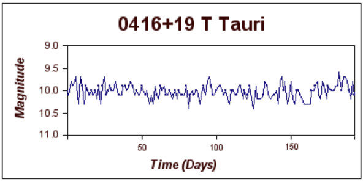
Jets & Herbig Haro Objects
During the processes of stochastic accretion, T Tauri stars expels matter out of their two bipolar jets at incredibly high temperatures (roughly 10,000 K) and velocities (several hundred km/s). These jets are powered by the infalling material interacting with the UV radiation and magnetic field at the surface of the T Tauri star. The matter is ejected at 90^o angles and leads to a gradual mass loss as the T Tauri star continues to accrete infalling material. This mass loss decreases as the protostar gets older. The ejections from the jets and the jets themselves stir up interstellar medium in their direct path. This functions to disperse the surrounding gas and thus inhibit the nearby formation of stars.
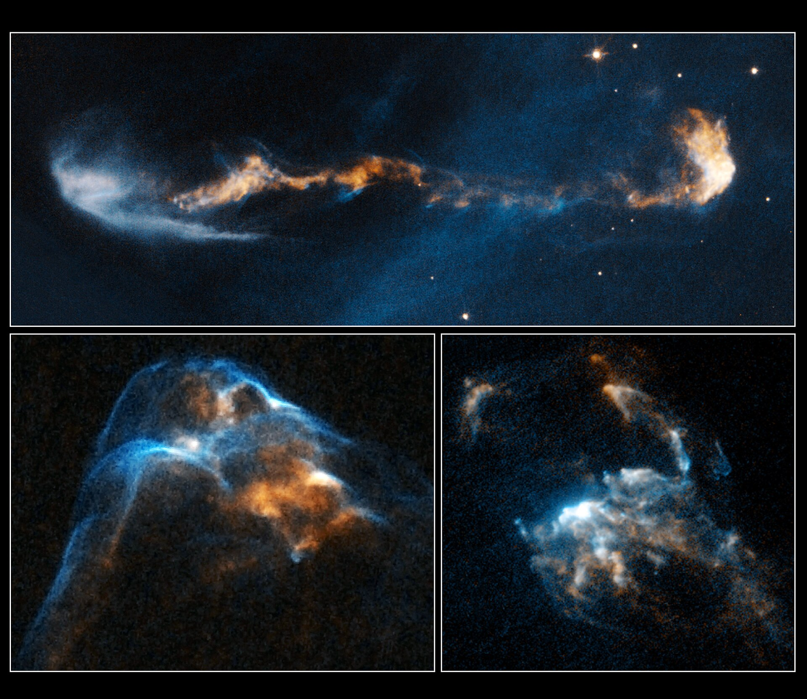
The material clumps that is shot out of the bipolar jets of T Tauri stars are called Herbig Haro Objects (HHOs). After being shot from the jets, they ionize the surrounding material to create bright streaks of colors and light that can be observed from earth. In fact, their formation might be one of the most reoccuring topics asked on the FRQ sections of Scioly Astro, typically in the basic form of "How do Herbig Haro Objects form?" To answer this question, memorize this sentence for competition: "Herbig Haro Objects are formed when jets of ionized gas ejected by young stars collide with nearby clouds of gas and dust at high speeds to create bright patches of nebulosity."
Herbig Haro Objects typically lie within 1 parsec of distance from their T Tauri Star source. As they travel through space, they carry the angular momentum of the accretion process that launched them into space which propels them forward. When Herbig Haro Objects collide with ISM, they undergo Electromagnetic emission, creating bright patches of light, Hydrogen Balmer (Halpha) lines, and distinct work surfaces.
Work Surfaces in Herbig Haro Objects are shock regions formed as part of the jet and outflow dynamics form T Tauri Stars. These surfaces are created where Herbig Haro Objects interact with surrounding medium or with themselves. There are two types of work surfaces in Herbig Haro Objects:
Terminal Work Surfaces: The terminal work surface is the outermost shock region where the jet collides with the ambient ISM. Terminal work flows are typically located at the tip or leading edge of the Herbig Haro Object outflow. Terminal Work Surfaces have two structural components: (1) a Bow Shock, which is formed in ambient gas being swept up by the jet; (2) a Mach disk, which is a shock within the jet material itself as it abruptly slows down. Terminal Work Surfaces function as an area where the outflow deposits its momentum into the surrounding environment, effectively "terminating" the jet flow in that direction. Terminal Work Surfaces emitt bright in optical and infrared light due to their strong shock heating.
Internal Work Surfaces: Internal work surfaces are shock regions withing the jet itself, created when faster-moving blobs of jet material catch up to slower ones. Internal Work Surfaces are often located along the jet axis between the source and the terminal surface. The creation of Internal Work Surfaces are caused by variability in the velocity of the ejected material from the central star, which ultimately leads to the internal collisions that make up internal work surfaces. Internal work surfaces function to heat and compress the jet material locally, leading to knot-like structures observed in many Herbig Haro Object jets. Like Terminal Work surfaces, Internal Work Surfaces also emit strongly in optical and infrared light.
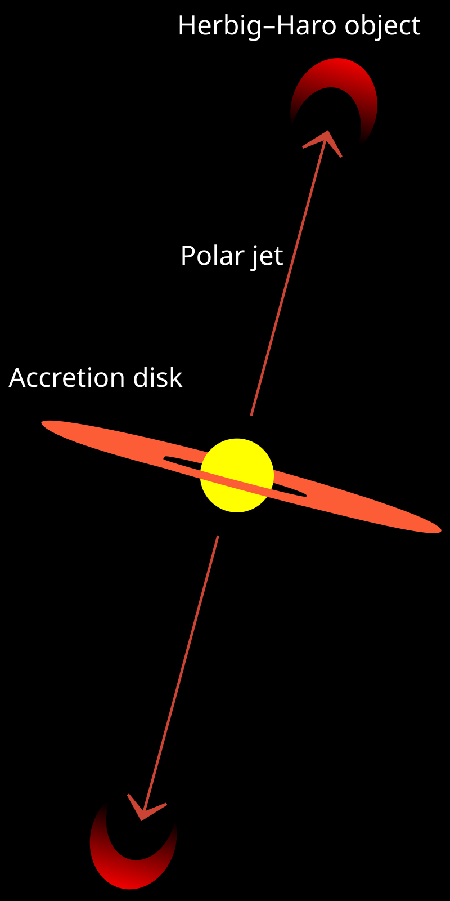
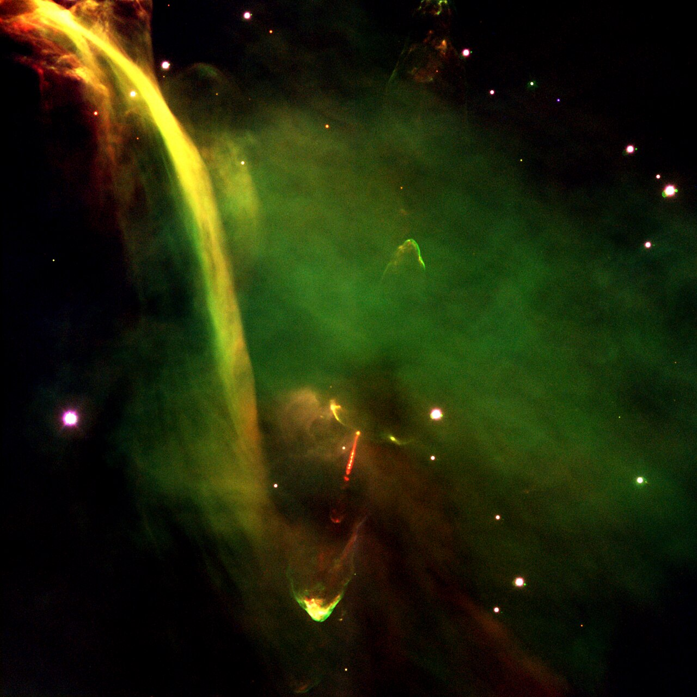
Herbig Ae/Be Stars
The second major type of protostar you will encounter in Scioly Astro is called a Herbig Ae/Be Star. It is incredibly important that you never mistake Herbig Ae/Be Stars as Herbig Haro Objects, as they have similar names but are completely different in objects (one being a jet and the other being a type of protostar). Herbig Ae/Be Stars can come as either Herbig Ae stars or Herbig Be stars, but we tend to group them together because they are similar in properties with minimal distinctions.
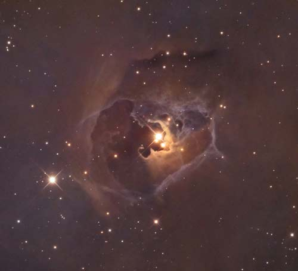
General Properties
As a basic start, think of Herbig Ae/Be Stars are just more massive versions of T Tauri stars. To be exact, Herbig Ae/Be Stars have masses between 2 to 8 Solar masses (the unit for solar masses being M\(\odot\)), compared to the approximately less than 2 M\(\odot\) mass limit of a T Tauri star. Herbig Ae/Be Stars Their greater mass allows them to gain more thermal energy via gravitational contraction and accretion, thus giving them higher temperatures and a spectral type of either G, A, or B. There are no Herbig Ae/Be stars past 8 M\(\odot\) because by the time they are above 8 M\(\odot\) in mass (by gravitational collapse or mass accretion), they have sufficient temperatures in their core to sustain hydrogen fusion and become visible to earth, thus making them a main sequence star. Like T Tauri stars, Herbig Ae/Be stars are also covered in a gas and dust envelop (from their original molecular cloud fragment) as well as a protoplanetary disk. To further classify Herbig Ae/Be stars, astronomers have enumerated a few different criterion (other than mass, of course):
Spectral Type earlier than F0 (as in, G, A, or B, which come before F in the Harvard classification system which we will explore in the next chapter)
Balmer (Halpha) Emission Lines. This classification groups them closer to T Tauri stars and other protostar, which all have Balmer emission lines in their spectra. For reference, Balmer emission lines are different to Lyman alpha series lines, the difference being that Balmer emission lines occur when an electron in a hydrogen atom transition from the higher energy state of n=3 to the lower energy state of n=2, whereas Ly-a series lines transition from n=2 to n=1.
Located in an ISM cloud. This classification ensures that they are a newly formed star shortly after fragmentation of a molecular cloud.
Infrared radiation Excess. Infrared radiation is only emitted in excess by a number of star types not including the majority main sequence stars, therefore excluding Herbig Ae/Be stars from misinterpretation with larger main sequence stars. Additionally, infrared radiation generally is caused by the cooling of gas and dust in a protoplanetary/circumstellar disk, further confirming the presence of the disk required of Herbig Ae/Be stars.
As we move forward into the more specific qualities of Herbig Ae/Be stars, we want to keep this in simple principle in mind: any quality not explicitly stated to be different between Herbig Ae/Be stars and T Tauri stars (whether that’s accretion processes, energy conversion, etc) can be assumed to be true for both T Tauri stars, Herbig Ae/Be stars, and generally all protostars. To be frank, because the classifications for T Tauri and Herbig Ae/Be stars are relatively broad, most protostars you will encounter assume the properties of one of these two (more commonly T Tauri stars though because lower massed stars are tremendously more common).
Emission lines and Spectra
Herbig Ae/Be stars emit radiation in wavelengths very similar to that of T Tauri stars. Like T Tauri stars, Herbig Ae/Be stars have strong Halpha (Balmer) line emissions and Infrared emission because of their accretion disks. Infrared is emitted by Herbig Ae/Be stars and other protostars because Infrared wavelengths are long and low energy, allowing it to pass through and not interact with the smaller gas and dust particles in the disk. High energy and short-wavelengthed radiation like gamma rays from fusion are small enough to interact with the ISM clouds and protoplanetary disk on its way to earth and thus cannot be detected. Herbig Ae/Be stars also have strong X-ray emission due their magnetic field interacting with the star’s outer layers (the corona, to be specific). It is important to note that because of Herbig Ae/Be star’s energy transfer mechanisms (more in next section), rotational speeds, and high mass, Herbig Ae/Be stars have weaker magnetic fields than T Tauri stars. Unlike T Tauri stars, Herbig Ae/Be star do not have lithium in their absorption spectra because they do not use Lithium as a energy source,
Energy & Fusion
There are only a few distinguishing properties of Herbig Ae/Be star energy production than that of T Tauri stars. The key difference is caused by mass: because Herbig Ae/Be star have higher masses than T Tauri stars, they in effect have higher core temperatures and fusion rates and thus burn through their lithium reservoir in an instant. This is reflected by the absence of lithium in their absorption spectrum. Additionally, because of their high masses, they gain more thermal energy through gravitational contraction via the Kelvin-Helmholtz mechanism and thus make it their primary form of energy producing.
Another important distinction between T Tauri stars and Herbig Ae/Be stars is their different mechanisms of internal energy transfer. T Tauri stars are often considered to be fully convective, whereas Herbig Ae/Be stars are thought to have both radiative and convective energy transfer. To understand this difference further, we msut first define a few terms:
Radiative: Radiative energy transport involves the movement of energy by photons (light). Radiative energy transport, photons are emitted, absorbed, and re-emitted by particles in the stellar material as they make their way outward from the core of the star. This outward motion of energy is what primarily distinguishes radiative transport from convective transport. Specifically, Radiative transport is in effect when photons generated in the core interact with particles in the plasma inside the star (plasma being a mass of free floating electron, protons, and nuclei from nuclear fusion), scattering many times before escaping. Each interaction between a photon and plasma slightly alters the direction and energy of the photon, making the journey outwards slow and diffusive of energy. Radiative transport dominates (coining a star as "radiative dominant" or even "fully radiative") when a star is of higher than average temperatures and low opacity. The low opacity requirement is important to note because at higher opacities, photons are more often trapped inside of the interior of the star (causing convective transport) and thus cannot be radiated out of the star effectively, impeding the radiative transport process. Because of the high temperature requirement, Radiative Dominance is more often found in stars of high mass which burn fuel hotter and faster.
Convective: Convective transport involves the physical movement of hot, less dense material rising to the surface of the star while the cooler, denser material sinks to the core. This of convective transport (AKA convection) as the cyclical movement of material in a star from hotter areas closer to the core to cooler areas near the surface, and then back again to the core and so on. In short, the hot gas rises, expands and cools, then sinks back down once it loses its thermal energy. Thus, as an direct counter to radiative transport, convective transport dominates in stars with low temperatures (and thus low mass) and high opacity. From this discussion of energy transfer, you could reasonably infer that T Tauri stars have high opacity and Herbig Ae/Be stars have low opacity.
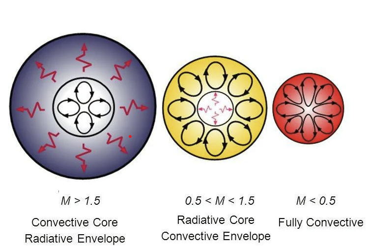
It is important to note that the grand majority of stars have layers in their interior that convective called convective zones as well as areas that are radiative called radiative zones. This is the case with Herbig Ae/Be stars, which have a radiative zone in the inner core area and a convective zone in their outer layers because of their high mass and high temperatures. T Tauri stars are often fully convective because they are smaller in mass and thus cannot sustain the high temperatures needed to have a radiative zone. Fully radiative stars are pretty rare and only exist in the most massive and hot stars to ever exist.
Variability
Like T Tauri stars, Herbig Ae/Be stars also experience variability for the same reason. For example, similar to T Tauri stars, clumps in its interplanetary disk are the leading cause of (random) variability in its apparent brightness.
There is one unique characteristic of the variability in Herbig Ae/Be stars. In the lowest brightness stage of the star (as in, if you plotted the apparent brightness of the star from earth’s POV, the lowest brightness stage would be when the clumps in the disk pass in front of the star, obscuring its light to a minimum) its radiation becomes blue and linearly polarized. This is because when the clump in the disk moves in front of the Herbig Ae/Be star’s light, it scatters the incoming short wave-lengthed radiation, which causes it to appear blue. This effect is called Rayleigh Scattering, which is defined as the scattering of light by particles smaller than the wavelength of the incoming radiation in its path without any loss of energy or change of wavelength. This effect acts to amplify the bluer, shorter wave-lengthed light. An example of Rayleigh Scattering can be seen in our blue sky, where short wave-lengthed UV radiation from the sun is scattered in the ozone layer of our atmosphere.
Ae vs. Be Herbig Stars
You may recall that in an earlier discussion in this chapter we established that there is only one small difference between Herbig Ae and Herbig Be stars. Their distinguishing quality lies in their variability strength: Herbig Be amplitudes of variability are generally smaller than approximately 0.5 magnitudes while Herbig Ae stars have amplitudes of variation in their brightness in the range of 0.5 to 3 magnitudes.
Classes of Protostars
As a protostar slowly continues to contract and become a main sequence star, its structure and properties change along the way. The quantify these changes, a chronological class system was made to track the structural progression of protostars. Here are the classes and their respective qualities:
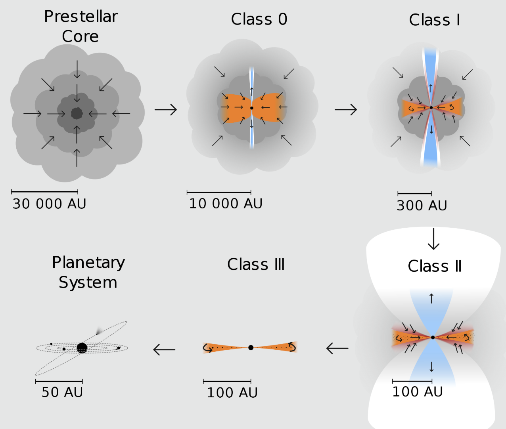
Class 0: Earliest Stage
Class 0 protostars are the youngest of the classes, still deeply embedded in the dense envelops shortly after the slowing of gravitational collapse and cease of fragmentation.
Class 0 protostars are known to be virtually invisible in visible light. They primarily emit in the far-infrared to submillimeter wavelengths due to interaction between their innate radiation and their infalling envelop (NOT accretion yet). Most of the mass of class 0 protostars is still in the infalling envelope (part of molecular cloud encasing the protostar and its disk, if the disk has formed yet), not yet accreted onto the central protostar. This infalling region is very large and cold during this stage, but will soon be accreted by the gravitational pull of the protostar. Class 0 protostars are yet to being accretion and are yet to form a disk. Class 0 itself typically lasts between approximately 10,000 to 100,000 years.
Class I: Embedded Protostar
Class I protostars are class 0 protostars that have begun to accrete more and more material from its infalling envelop and surrounding disk. This causes the protostar to emit radiation more strongly.
Class I protostars are distinguished from class 0 stars by a few important qualities. Class I protostars are now visible faintly in visible light and in the mid or near-infrared wavelengths. Class I protostars, unlike class O protostars, have begun to form a protoplanetary/circumstellar disk as well as strong biploar outflows and jets. Because of the onset of accretion, the creation of a disk, and the biploar jets that disperse surrounding ISM, the mass of the protostar’s infalling envelope is significantly reduced. Class I typically lasts between approximately 100,000 to 500,000 years.
Class II: T Tauri (Classical) Star
Class II protostars, AKA T Tauri stars, are characterized by an almost completely dispersed infalling envelope and optical and near-infrared visibility.
Class II protostars are surrounded by a thick, prominent protoplanetary disk. The thick-ness of the disk of a class II protostar is important to note because it distinguishes the disk of a class II protostar from the thinner, recently formed/currently-forming disk of a class I protostar. The light emission of class II protostars, unlike the light emission of previous classes, has become increasingly dominated by optical light. Accretion rates in Class II stars have slowed since their rapid speeds during stage one, primarily because there is now less mass to accrete from the now reduced infalling envelope. It is at this point, in class II protostars, where the random and periodic variability of protostar emission lines and apparent brightness starts to occur (to a measurable degree, that is). protostars remain in class II for approximately 1 to 10 million years.
Class III: Weak-lined T Tauri Star
Class III protostars are distinctly known to be protostars that have mostly or completely dispersed its surrounding disk.
Compared to the previous classes, class III protostars have emission most similar to that of a main sequence star, with very weak infrared excess. This weak infrared emission is primarily a result of the now completely dispersed disk and infalling envelope, meaning that their is less ISM to be accreted or excited by the radiation of the protostar. Thus, there is little to no accretion in class III protostars. Once the disk has completely disappeared, any clumps in the disk left intact are known as exoplanets or planetesimals depending on their size. Class III lasts for approximately 10 million years or more.
Protoplanetary, Circumstellar, and Debris Disks
In our discussion of stellar formation, we have maintained that the formation of a disk surrounding the star is integral to its formation. But how exactly do they form? What exactly is their structure and properties? Why can they form planets and clumps? We will answer all these questions in this section.
To begin, we shall first distinguish the different general types of disks you will encounter in astro research and competition. The terms protoplanetary Disk and circumstellar disk are often used interchangably (especially in this handbook and in scioly astro), but the fact of the matter is that they have important differences that you should know beforehand. Simply put, circumstellar disks is a broader term that refers to any disk of gas and/or dust that orbits a star. Protoplanetary disks are a specific type of circumstellar disk that exists around a young star and is in the process of forming planets. That is why we often refer to the protoplanetary disks primarily in our discussion of stellar formation and protostars. It is important to remember that all protoplanetary disks are circumstellar disks, but not all circumstellar disks are protoplanetary. These disks can also be classified as accretion disks at the same time if they are undergoing accretion at a given moment.
Another type of disk that you may encounter in research or competition is a Debris Disk. Debris disks are types of circumstellar disks (and protoplanetary disks if they have clumps inside; see AU microscopii or Beta Pictoris as cool real life examples) that are made up of ONLY dust and small rocky or icy bodies orbiting the star. It is essential that you understand that debris disks have little to no concentration of gas. More information on Debris disks in a later section.
General Properties
For the following General Properties, Formation, Role in Planetary Formation, and Structure sections we will be referring to the qualities of protoplanetary disks, but these same qualities can generally be applied to circumstellar and other disks types in moderation.
Protoplanetary disks typically orbit their star for 5 to 10 million years before they are dispersed. Throughout their lifetime, they serve as a source of mass and energy to their respective protostar through accretion. Protoplanetary disks are often incredibly large in size, reaching up to 1000 AU in radii (AU being an Astronomical Unit, which represents 1.496E11 meters, or the mean distance between the earth and the sun). The size of protosplanetary disks are often measured via light echoes, which constitutes the process of measuring the length of the reflection of light from Herbig Haro objects or the star itself on the interstellar medium. Protoplanetary disks are often studied in infrared imaging, which allows astronomers to create heat maps and observe the internal structure of the disk.
A common type of protoplanetary disks observed in regions with high rates of star formation are proplyds. Proplyds are externally illuminated, photoevaporating protoplanetary disks. Their ionization is caused by intense short wave-lengthed radiation (like UV radiation) being emitted from their star and interacting with the particles of gas and dusts in the protoplanetary disk. Proplyds have abnormally high metallicities, which aid their bright nebulosity and frequent planetary formation. Proplyds are most common in stellar nurseries like molecular clouds and HII regions.
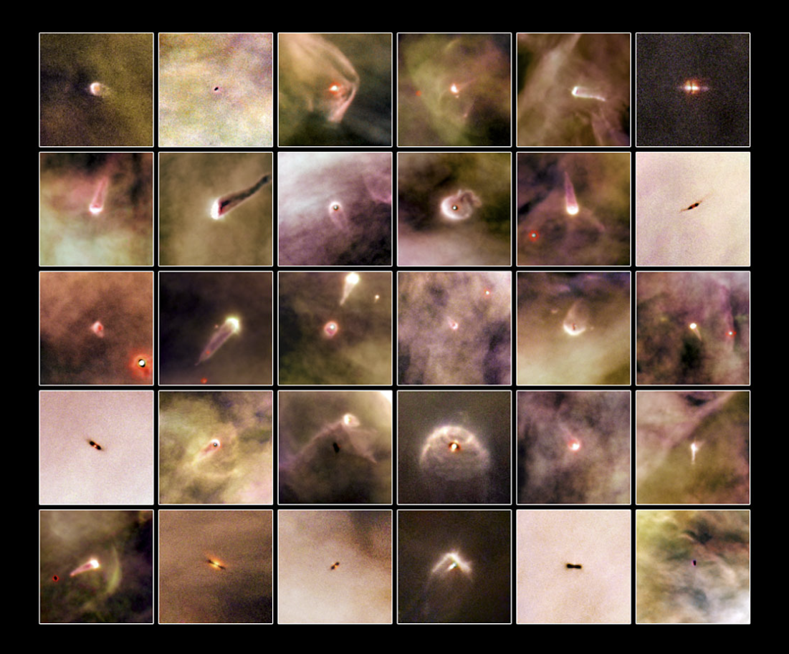
Formation
Protoplanetary disks have a specific and consistent mechanism for formation. When a molecular cloud fragments, the smaller collapsing clouds of ISM become denser and accrete in the direction of its net angular momentum. During this process, the conservation of angular momentum causes the cloud’s rotation to increase as cloud’s radius shrinks in collapse. This compression eventually creates a disk as it accretes mass from the cloud.
Role in Planetary Formation
It is common knowledge that the clumps that form in a protoplanetary disk are the seeds of future planets. But how does a protoplanetary disk facilitate their creation. In short, the balance between electrostatic (static energy) and gravitational interactions cause dust and ice grains in the disk to accrete into clump masses called planetesimals. This process competes against stellar winds, which drive the gas out of the system, as well as gravity (accretion) and internal stresses (disk viscosity) which pull the material in towards the central protostar. Planetary formation will be discussed in greater detail in a Exoplanets chapter.
Structure
Protoplanetary disks have both a radially (horizonatally) and vertically layered structure organized either from layers closest to the star to layers farthest from the star or from top-down. Because of their differing temperatures and interactions with incoming radiation, they each have distinct properties that we shall enumerate. The following radial layers organized from closest to the star to furthest from the star.
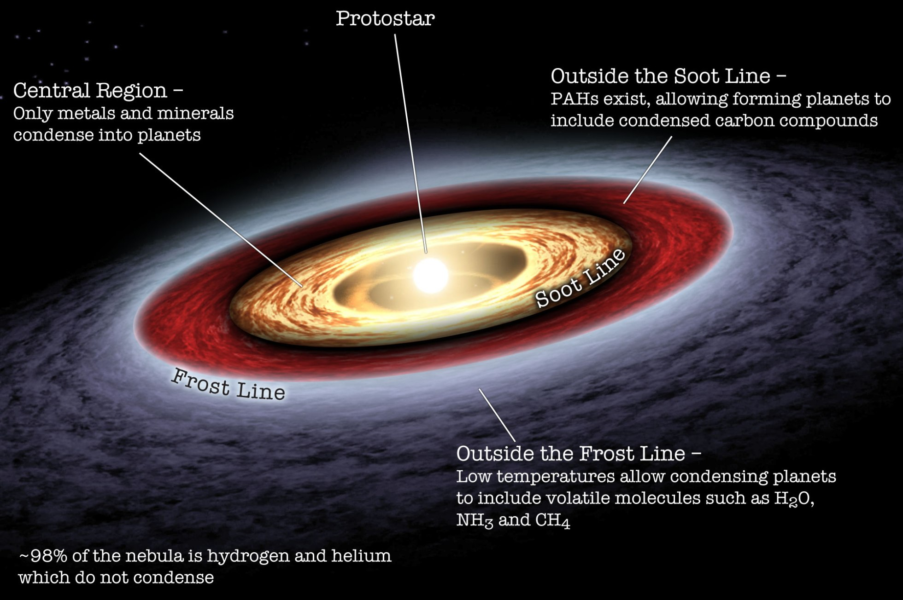
Magnetospheric Cavity (\(\sim\) 0.01-0.1 AU): The magnetospheric cavity being the closest of all the layers to the protostar means that it is directly involved with the accretion process and is the most affected by the radiation of the star. In the magnetospheric cavioty, the strong magnetic field of the protostar pulls material from the magnetospheric cavity onto the magnetic field lines. The stream of matter flowing along the magnetic field lines from the accretion disk towards the protostar is called funnel flow. The magnetospheric cavity is dust free, dominated by hot ionized gas. This is because the larger dust molecules are dissociated by the concentrated energy of the short wave-lengthed radiation coming from the star. Temperatures in the magnetospheric cavity can exceed 3000 K.
Hot Inner Disk (\(\sim\) 0.1 AU): Traveling one layer deeper into the disk, the hot inner disk layer is a gas-dominated region where dust grains have sublimated (sublimation is the direct transition of matter from a solid to gas phase with no intermediate liquid state) due to intense heat. The hot inner disk layer is composed mainly of atomic hydrogen (H atoms), helium, and simple molecules like H2, CO, and other molecules commonly found in molecular clouds. Temperatures in the hot inner disk range from 1500 K to 3000 K due to the strong UV and X-ray heating from the protostar (cooler than the magnetospheric cavity, though).
Silicate Sublimation Front (\(\sim\) 0.1-0.5 AU): Another layer deeper into the disk you have the silicate sublimation front, which is the boundary where silicate mineral (e.g. olivine, pyroxene) condense from the gas phase to the solid phase as temperatures rapidly decrease to a range of 850 to 1500 K (but always cooler than the soot line). The silicate sublimation front marks the inner edge of the optically thick dusty disk. This means that the dust absent in the hot inner disk and magnetospheric cavity has begun to appear in the silicate sublimation front. Thus, the silicate sublimation front is primarily composed of silicate minerals, dust, and gas particles. The silicate sublimation front is often visible in infrared interferometry and thermal emission modeling.
Soot Line (\(\sim\) 0.5-1 AU): The soot line is the layer behind the silicate sublimation front that acts as a transition zone where carbonaceous grains (e.g. graphite and other organic compounds/carbon volatiles) form and condense into into solid phase as you move further away from the protostar (carbon solids are sublimated into gas as you move closer to the star in a reverse reaction). The temperatures at the soot line layer fall to below 1100-1200 K. The abundance of carbon solids past the soot line are the direct explanation for the carbon commonly found on terrestrial planets like our earth, and coincidentally the same carbon that is the building block of all organic life as we know it. Pretty cool right? The soot line is concentrated in silicate and carbon solids, dust, and gas.
Terrestrial Planet-forming region (\(\sim\) 0.5-4 AU): the terrestrial planet-forming region is a zone rich in rocky solids (silicates and carbonaceous grains), just in higher concentrations than the soot line. These silicates and carbonaceous grains are suitable for forming earth-like planets with rocky, metallic surfaces. Dust coagulation (sticking together by electrostatic forces to create planetesimals), fragmentation (to make gas giant planets), and radial drift (migration of planets closer towards protostar) dominate early solid and planet evolution. Temperatures in the terrestrial planet-forming region range from 500-1500, but always lower the its previous layers.
Snow Line (AKA Frost/Ice Line) (\(\sim\) 2-5 AU): the snow line is the minimum distance from a protostar where temperature is low enough for volatile compounds like water ammonia, methane, carbon dioxide, and carbon monoxide to condense into solid grains. The snow line, given its high volatile concentrations, is hot-spot for planetary formation. Within the now line, terrestrial/rocky planets form because rocks condense at higher temperatures. Beyond the snow line, volatiles are more common in gaseous form and thus fragment into gas/ice giants. Such volatiles are detected by astronomers using rarer tracer gases line Diazenylium for carbon monoxide. The snow line typically averages temperatures between 150 to 170 K. As you move past the snow line, there is a dramatic increase in solid mass surface density (by 2-3x), boosting growth of planetary cores. If you are observing the planetary fomration of large planets, they will typically be observed past or at the snow line.
Middle Disk (\(\sim\) 5-30 AU): The middle disk is the continuation of the properties of the snow line, just in a larger radius with rapidly decreasing temperatures. Gas giants and icy giants, because the middle disk region is past the snow line, are commonly formed in this area. Temperatures in the middle disk layer range from 150 K to \(\sim\) 50 K outward. The middle disk regions can sustain cold-enough temperatures to allow for the formation of complex gas-phase molecules like HCN, C2H2, CH3OH, and more.
Outer Icy Disk (1-100+ AU): the outer icy disk is the final radial layer of a protoplanetary disk and by far the coldest: the outer icy disk layer averages less than 50 K in temperatures, approaching interstellar values. These cold temperatures allow for frozen-out molecules like CO CH4, and N2 (as in, in solid ice form) to dominate over gas particles–the complete opposite of the Magnetosphere and Hot inner disk layers which where dominated by gas. Continuing with the effects of the low temperatures of the outer disk, ice mantles in the i=outer disk layer facilitate the formation of complex organic molecules, namely amino acid precursors, which are a fundamental building block of life. Because of the high icy grain concentration, the outer icy disk is often the site of comet formation, Kuiper Belt-like bodies, and outer gas/ice giants.
The exact names of each of these layers, other than the snow and soot lines, often change slightly depending on the author of the research paper or competition test you are reading. However, with this general overview, you will be able to tackle the gran majority of these problems by the application of the properties of the layers above to your text.
Similar to the radially layers of protoplanetary disks, each of the vertical layers of protoplanetary disks have unique properties that are a direct result of their differing temperatures and distances from their star. Unlike the radial layers, vertical layers are mirrored at the middle height of the disk. Here are the vertical layers of a protoplanetary disk enumerated from the top (or bottom) of the disk to the middle-most layer of the disk:
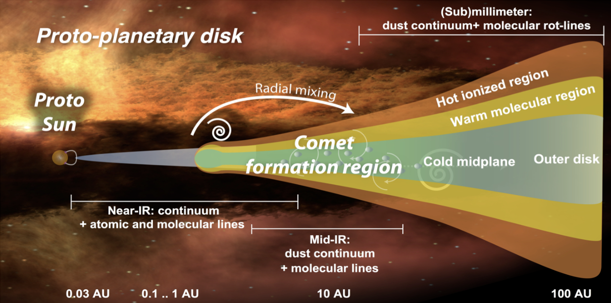
Disk Atmosphere (AKA Surface Layer): The disk atmosphere is the outermost and most elevated region of a protoplanetary disk, where gas and sut are directly exposed to intense radiation from the central star. THis layer is typically optically thin, meaning that UV and X-Ray radiation phons from the star penetrate easily. This causes high levels of photoionization and photodissociation. As a result, the gas here is often highly ionized, with species like C^+, H^+, OH, and CN dominating in concentration. Temperatures in the disk atmosphere reach up to 3000 K, while generally staying in the thousands of kelvins range no matter the distance. These high temperatures are significantly higher than any of the other vertical layers of protoplanetary disks. The high concentrations of gas particles in this layer can become hot enough to undergo photoevaporative outflows, meaning that the top of the layer is slowly carved and dispersed by the incident radiation from the star, gradually eroding the disk and shortening its lifetime. Disk atmosphere layers are often low in concentrations of dust grains. This is because their larger size allows them to be easily blown upward by disk turbulence and stellar radiation pressure. Despite being low in density, the disk atmosphere plays a critical observation role to astronomers because it emits strongly in the infrared and millimeter lines. The infrared and millimeter emission lines of the disk atmosphere allow astronomers to model the internal structure of the disk and observe the molecular and atomic transitions of the ISM as the disk layer interacts with incident radiation and cooling mechanisms. Because of the low density of the disk atmosphere, it exhibits strong disk winds at its surface and magnetorotational instability (MRI), which is the fluid instability that causes an accretion disk orbiting a star to become turbulent. The turbulence of the magnetorotational instability transports angular momentum vertically through the disk.
Warm Molecular Layer (AKA Intermediate Layer): Beneath the high-energy, high temperature disk atmosphere layer, the heated and partially shielded warm molecular layer serves as the chemical engine of the disk. The warm molecular layer obscures visible and UV light, but not entirely opaque to infrared and millimeter radiation (like the disk atmosphere), which allows for partial energy escape and regulated heating. Temperatures in the warm molecular layer range from 30 to 300 K. This warm, moderate temperature environment facilitates the formation of complex gas molecules like CO, H2O, CH4, HCN, NH3, C2H2. The warm molecular layer, as a direct result of its interplay between photochemistry form the overlying disk atmosphere and the gas-grain interactions from the underlying midplane, has the potential to contain prebiotic compounds, which is a term for any molecule that can serve as a building block to earth-like life (e.g. amino acids, nucleotides/nucleic acids, carbon solids, etc). Dust grains in the warm molecular layer begins to coagulate, growing in size and mass as they interact with molecular and each other (think of particles sticking together like snowballs). Ice mantles, which are thin layers of ice, primarily water ice, that form on the surfaces of dust grains in dense, cold regions of interstellar clouds, form on these grains as temperatures fall with increasing distance from the star, leading to complex organic chemistry on grain surfaces. The warm molecular disk layer acts as a transitional zone, mediating radiation, particle motion, and chemistry between the energetic disk atmosphere layer and the dense midplane layer, and is an important contributor to the composition of planet-forming material.
Disk Midplane: the midplane is the central, densest, and coldest region of the protoplanteray disk, forming the disk’s equatorial spine and acting as the primary site of planet formation. In the disk midplane layer temperatures drop to a range of 10 to 30 K in the outer disk and remain below 300K even in the inner few AU of the disk due to the extreme radiation shielding by overlying layers (e.g. the disk atmosphere and warm molecular layers). The gas concentration in the disk midplane is mostly neutral with very low levels of ionization due to the obscuring of radiation by the overlying disk layers. These low levels of ionization create dead zones where magnetic effects like magnetorotational instability are suppressed, reducing the turbulence and enhancing the physical and chemical stability. In this protected environment, nearly all volatile compounds freeze out onto dust grains (creating ice mantles), resulting in a chemical compsition dominated by ice-coated solids rather than gas (keep in mind that this is the innermost vertical layer of the disk). Water, CO, NH3, CH4, and other ices condense onto grains, facilitating grain growth into pebbles, boulders, and eventually planetesimals. In the disk midplane, streaming instabilities and gravitational collapse enable the rapid accumulation of material into planetary cores. The chemistry in the midplane is slow and dominated by grain-surface reactions that yield complex organic molecules and prebiotic compunds. The disk midplane has the highest density of the vertical protoplanetary disk layers which allows it to preserve complex molecular structure and early chemical evoltuion.
Debris Disks
The final subject of ISM disks we shall cover is the topic of debris disks. Debris disks, in short, are gas poor disks of circumstellar dust found near a protostar. They are usually less than 10 million years old, and are the final stage of disk evolution. Debris disks are formed via the collision of planetesimals and other disk accretions like asteroids, comets, and forming planets. The creation of debris disks is supported by a phenomenon known as Pounting Robertson Drag, which is when radiation from a star causes gas and dust grains to slowly lose angular momentum relative to its star and drift. This causes the substantial removal of gas particles from the disk in late-life stages of a protoplanetary disk, causing it become a debris disk.
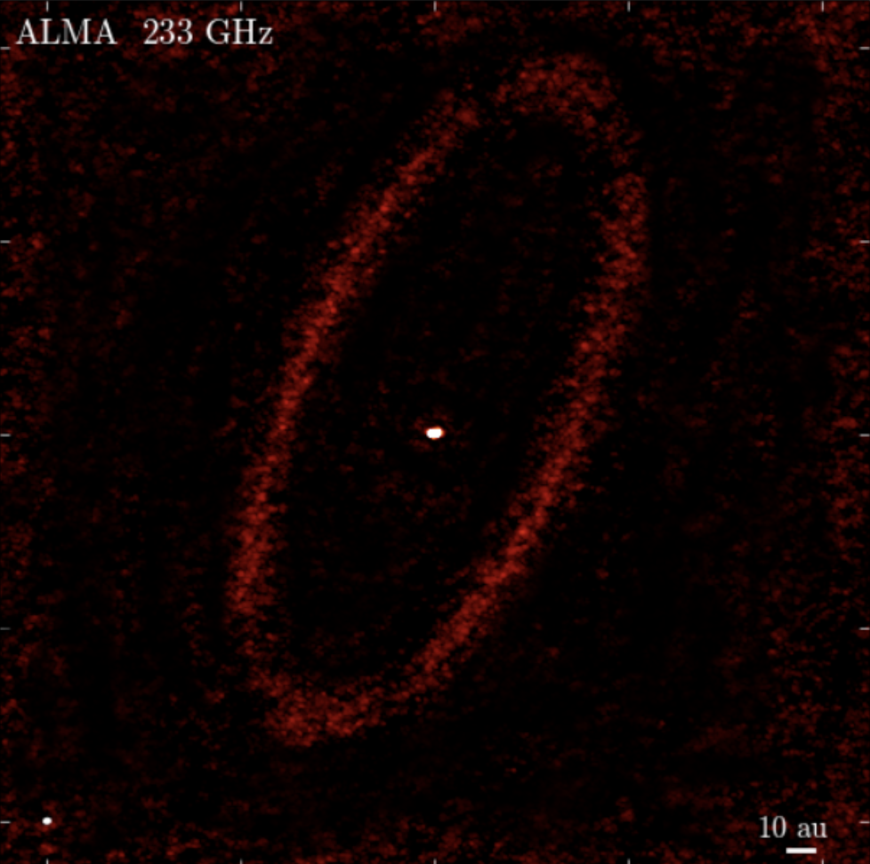
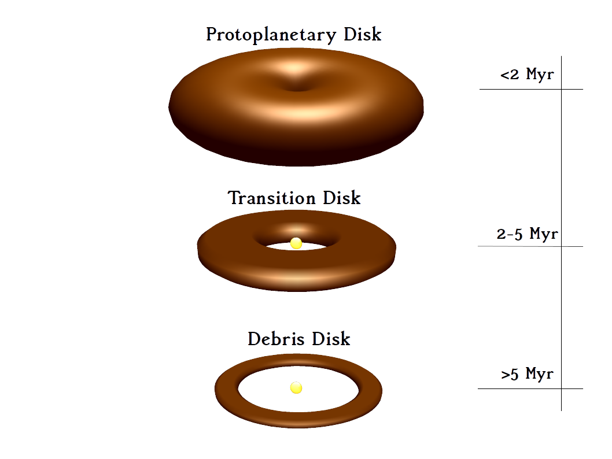
Hertzsprung-Russell Diagram
The Hertzsprung-Russel (HR) Diagram is quite possibly the most reoccurring and topic in the discussion of stellar evolution because it allows astronomers to graphically conceptualize the physical changes of a star as it progresses through its life. The HR diagram does this by plotting temperature on the x axis, luminosity (or sometimes absolute magnitude, another standardized measurement of light generated by a star), with radii measured on a tilted y axis. Some HR diagrams use stellar classification (as in OBAFGKM, going from hottest at O to coolest at M).
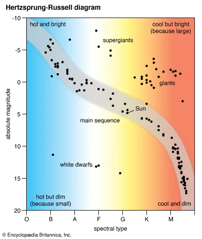
Most major evolutionary processes on stars can be graphed on the HR diagram. This is especially the case for the evolution of protostars, each of the two major types (T Tauri star and Herbig Ae/Be stars) having their own unique evolutionary track.
Protostar evolutionary tracks
The unique HR diagram evolutionary track of T Tauri stars is called the Hayashi Tract. Formally, the Hayashi tract is defined as a luminosity-temperature relationship obeyed by infant stars of less than 3 solar masses in pre-main-sequence phase of evolution.
Structurally, the lines of the Hayashi track represent the physical changes of the protostar as it contracts and heats up eventually enough to burn hydrogen. That is why the end point of every Hayashi track is the diagonal main sequence line. It is important to remember that stellar radii is measured from the bottom left corner being the smallest radii to the top right being the largest radii. This tells us that each diagonal/vertical dip in the Hayashi tract represents the contraction of the star’s radius by the force of gravity.
For protostars that are larger than 3 solar masses, AKA most Herbig Ae/Be stars (the 2 solar mass Herbig Ae/Be stars evolve on the Hayashi track, but this lower mass is quite rare), evolve on the Henyey track, which holds the same properties of the Hayashi track, just more structurally spread out and with a end point higher up on the main sequence (remember, higher mass = higher temperatures).
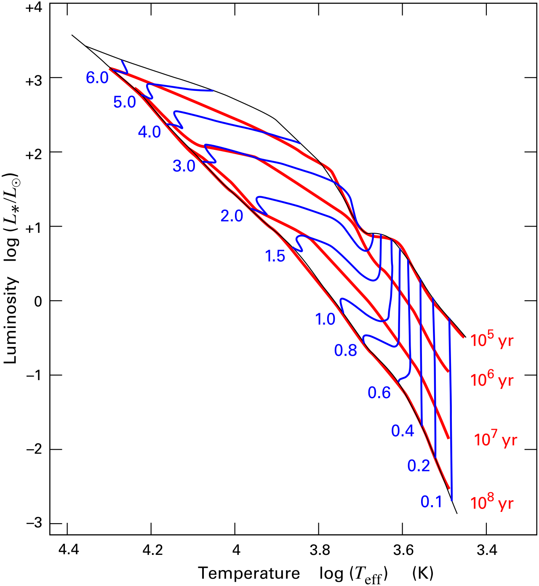
Being able to differentiate the Henyey and Hayashi tracks and the stars that they represent is incredibly important to your success in Scioly astro. Now that you have a foundational understanding of stellar formation, we will now move our discussion to stars on the main sequence. Remember our first example of a contracting T Tauri star? Now this low-mass protostar has contracted enough to sustain over 15,000,000 K temperatures in its core–the sufficient amount of heat needed to begin the fusion of hydrogen.